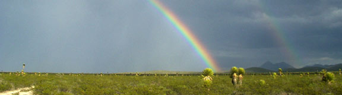
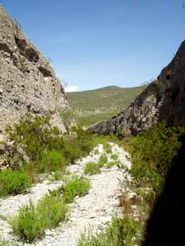
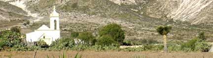
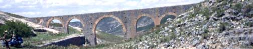
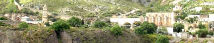

|
THIS IS AN ARCHIVED SITE - ESTE ES UN SITIO ARCHIVADO |
|
Please visit
https://www.realde14.com for the current
site |
|
Visite
https://www.realde14.com para ver el sitio actual |
| Home |
Town |
Area |
History |
Links |
| Miles | km | ||
| 0.0 | 0.0 | Begin log at intersection of Hwy 57 and the highway to Dr. Arroyo in Matehuala | |
| 0.3 | 0.5 | The north Matehuala arch (WalMart) | |
| 0.6 | 1.0 | Hotel Las Palmas | |
| 3.3 | 5.3 |
Turn left on highway to Cedral |
|
| 5.8 | 9.3 |
Road from left goes to Matehuala via Ojo de Agua. Continue straight. |
|
| 8.9 |
14.3 |
Santa Teresa (La Curva) |
|
| 13.2 | 21.2 | La Laguna on the left and the boulevard into the east side of Cedral. La Laguna has a paleo site with possible human habitation greater than 20,000 years. | |
| 13.8 | 22.2 |
Pemex on the left |
|
| 14.1 |
22.7 |
Street to left enters Cedral and goes to the center where there is a good mercado. Continue straight on the bypass. | |
| 14.5 | 23.3 |
Pemex on left. This is the last gas station, There is no gas in Catorce. |
|
| 15.4 | 24.8 |
End of Cedral bypass. Keep right on the highway. |
|
| 20.7 | 33.3 |
Turn left
onto the cobblestone road to Real de
Catorce. (Continuing straight for 2.6 miles leads to the turn off to
San Juan de Venegas and the thermal swimming pool there. This highway
continues on to Venegas and eventually to San Tiburcio on Hwy #54 from
Saltillo to Zacatecas.) |
|
| 23.3 | 37.5 |
Antenna tower on right. Sometimes a rainbow on the left. Continue on. |
|
|  |
|||
| 25.8 | 41.5 |
San Antonio de la Cruz. Road to the right goes to Poterillos, 5 km. |
|
| 26.4 | 42.5 |
Old railway cut on the right. Part of the narrow gauge system that once served Catorce. This is a good short walk along the old railway grade. Cerro de la Cruz on the left is a basaltic intrusion. |
 |
| 26.9 | 43.3 |
Railway grade rejoins the road from the right. |
|
| 29.5 | 47.5 |
Cattle guard crossing |
|
| 30.3 |
48.8 |
Road to right is the lower entrance to Potrero. |
|
|  |
|||
| 31.3 | 50.4 |
Potrero clinic on right. Road to right is the upper entrance to Potrero. |
|
| 31.7 | 51.0 |
Espolon. Road to left leads to “Los Arcos”, a high stone aqueduct over another part of the old railway grade. |
|
|  |
|||
| 32.3 | 52.0 |
La Luz. Site of the Santa Anna and Refugio
mines. Road to left to Alamitos de
los Diaz, 10 km. (See the La
Luz to La Maroma roadlog.) |
|
|  |
|||
| 33.5 | 53.9 |
El Mirador. Good view of Potrero and where you just came from below. |
|
| 33.7 | 54.3 |
Entrance to Ogarrio tunnel. |
|
| 35.1 | 56.6 |
Exit the Ogarrio tunnel. Real de Catorce |
|
| 35.5 | 57.1 |
The Real de Catorce plaza. |